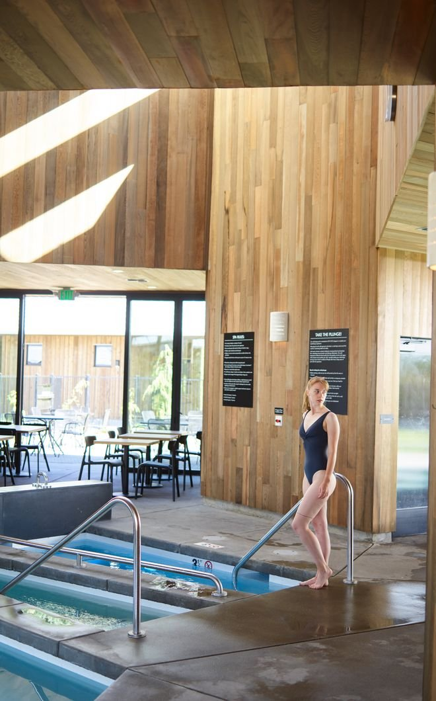
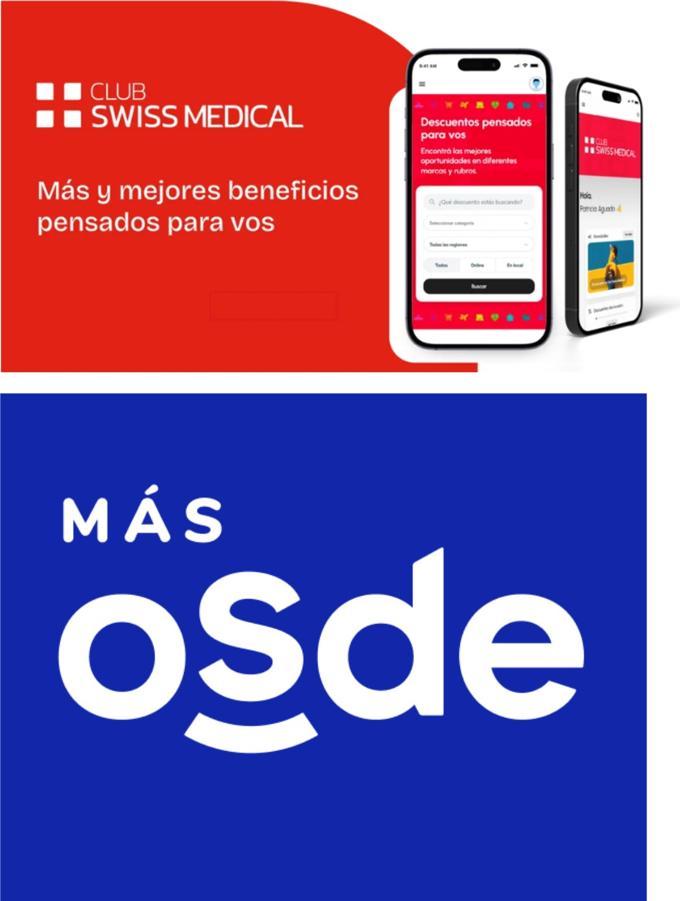
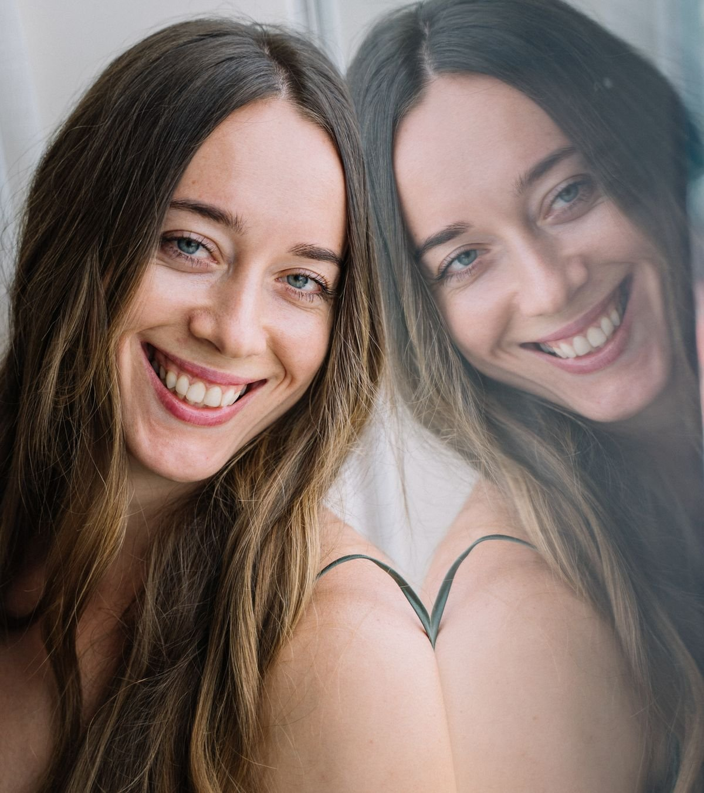
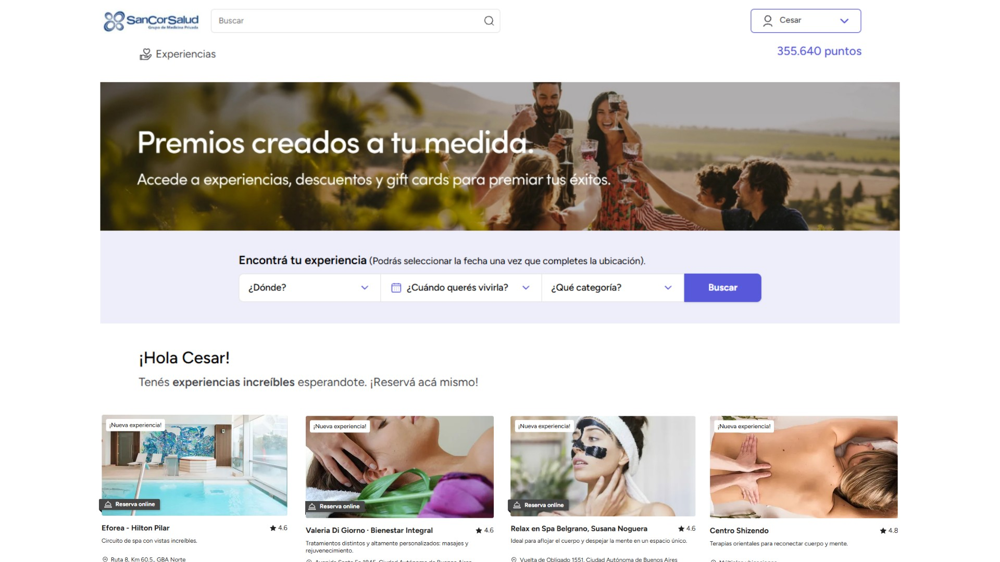
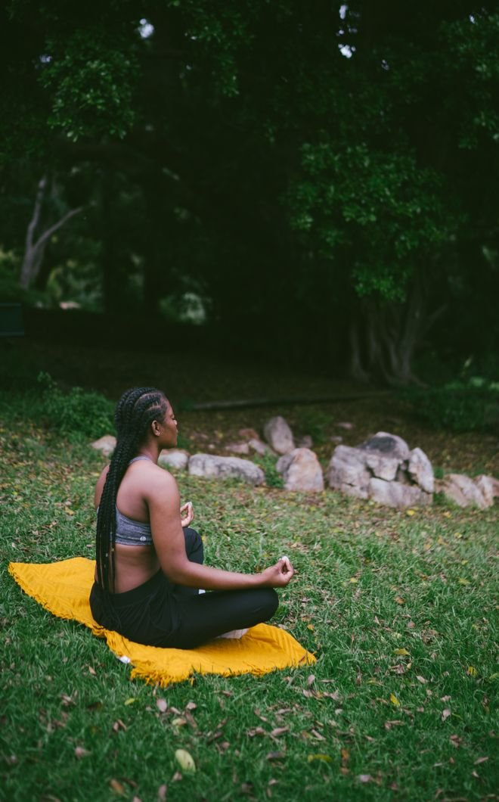
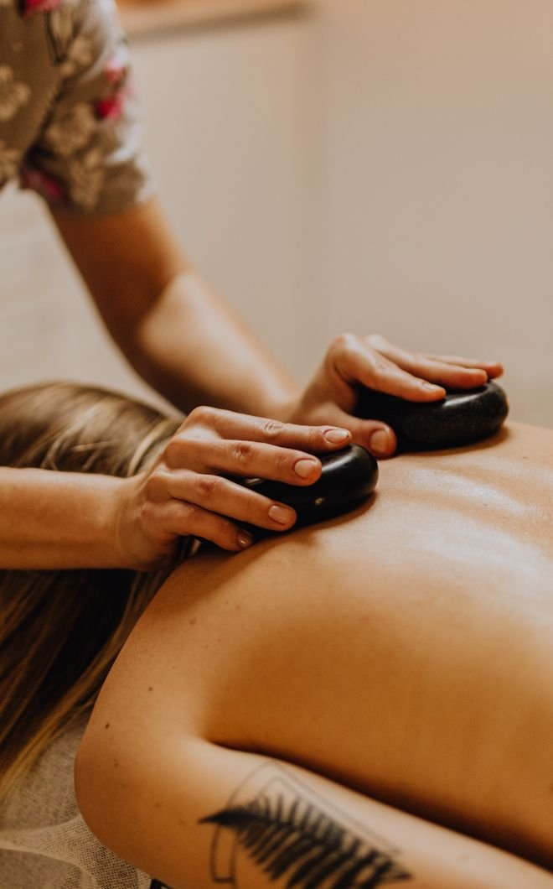
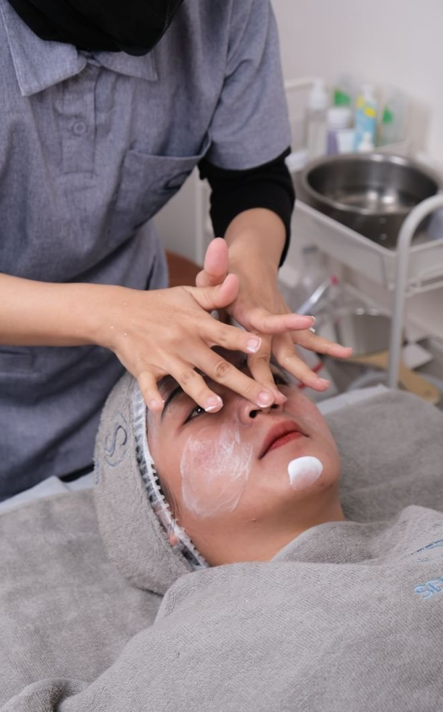

Wellness
Diferenciando los planes de salud
con una propuesta integral de Bienestar para clientes y colaboradores
El valor tiene que ir más allá del plan de salud.
Todos los operadores hablan de su red de infraestructura médica, pero no todos pueden destacarse.

Todos ofrecen plataformas de cupones de descuentos en restaurantes, entretenimiento, etc. que los usuarios ya no valoran y pocos usan.
SanCor ya tiene una propuesta de salud robusta. Proponemos ahora complementarla con un programa de bienestar que fidelice al colaborador y sobre todo al decisor de RRHH.
De cuidar la salud a acompañar el bienestar integral.
Una plataforma de experiencias para contribuir al bienestar integral de los afiliados de los clientes corporativos.
Porque cuidar a las personas no es solamente atenderlas cuando necesitan salud. También es ayudarlas a sentirse bien, desconectar, disfrutar, compartir y vivir mejor.






Proponemos desarrollar una plataforma web de bienestar (xxx) en la cual los colaboradores de los clientes puedan acceder y canjear puntos por las experiencias que deseen (xxx)
Desarrollamos una plataforma exclusiva para este Programa
Se le otorga a cada cliente corporativo
Cada empresa puede tener su propia plataforma
Sancor le brinda mensualmente a cada empresa una suma de puntos para que ellos entreguen a sus colaboradores.
Cuidar la salud.
Y también el bienestar.
¡Muchas gracias!